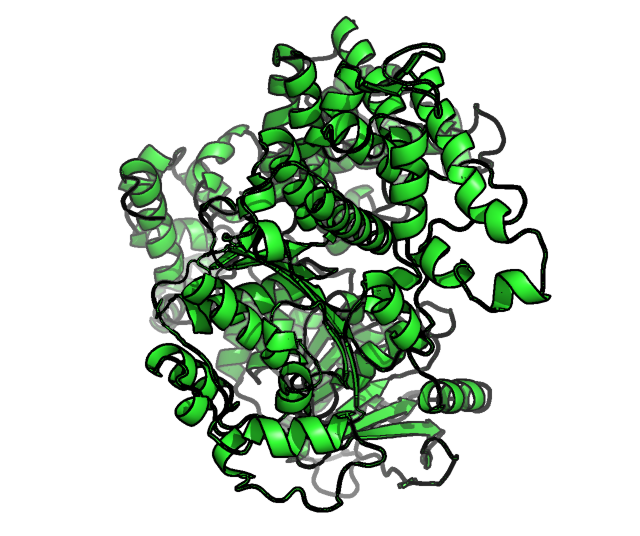
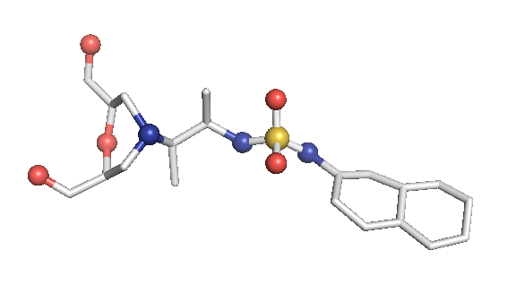
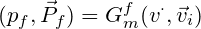
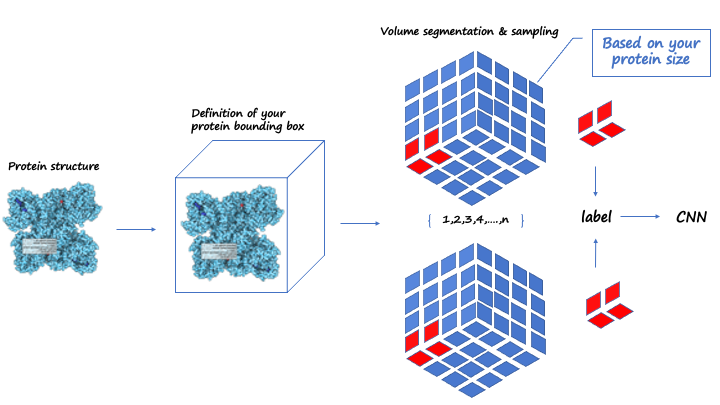
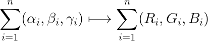
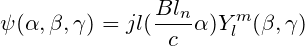
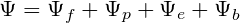
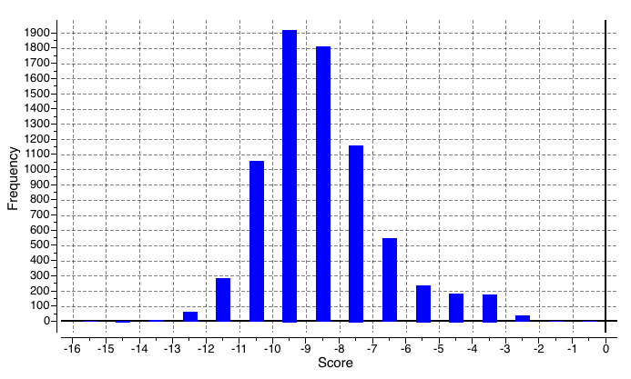
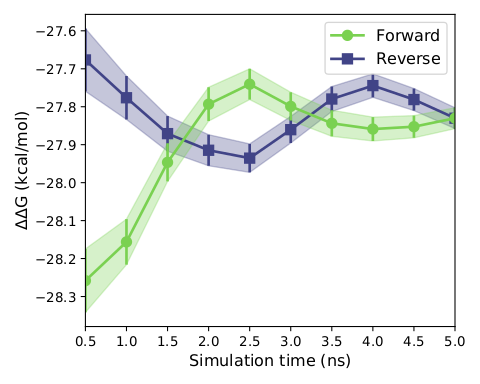
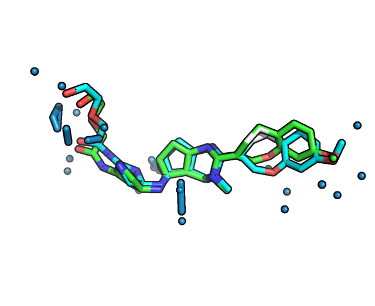

Part1 : Protein optimization and ligand preparation
Before extracting the structural information features of protein and inhibitors, we needed to optimize the molecular structure, so as to improve the reliability of the extracted molecular 3D structural information. Otherwise, errors and inaccurate results will be reported in the subsequent simulation process. For the structural optimization of polymerase theta enzyme, we found that it lacks many loops, so it is important to repair the loop region of the protein. After sequence observation, we found that most of the missing loops are within the range of 5-10. Therefore, after the rough structure containing loops is repaired by the cyclic coordinate center (CCD) [2], we further rationally optimize the generated loop structure through the closed-loop algorithm KIC, Set a loop with four node amino acids, and then cut it from the middle node to form a cut. Then, use the fastelax module in rosetta [3] to eliminate the unreasonable conformation in the protein crystal structure and compare the energy changes between multiple structures. Among them, we search for the optimal conformation at the local energy barrier of a given three-dimensional structure through five iterations (single protein) of amino acid side chain rearrangement and energy minimization calculation, The side chain can enter a new energy minimum point. After that, the clique algorithm is used to cluster the 600 protein structures screened, so as to screen out a more reasonable conformation, after that, foldx was used to conduct annealing optimization and self mutation optimization for the obtained structure in the environment with ionic strength of 0.05 and PH=7. Finally, pdb4amber tool in amber22 was used with reasonable Hydrogens, so far, the protein structure optimization was completely completed, as shown in the following Fig.1:

Figure1.the final optimized DNA polymerase theta structure
After optimizing the protein, we need to prepare the ligand file for the subsequent extraction of structural information. Because we have generated about 300 small molecules with high druglike properties for the POLQ target according to our model, due to the computational power, we used the GFN2-xtb[4] algorithm to optimize these structures separately at the beginning. After hydrogenated docking, The virtual screened molecules are then optimized and calculated using the B3LYP/B97-3c[5] in combination with the def2-TZVP basis set. At the same time, the RESP2 [6] charge of the molecules is calculated using Multiwfn [11], which further replace the am1-bcc charge used in molecular dynamics simulation. Because the RESP2 charge can greatly reduce the following two problems in using MK/CHELPG charges, (1) the results are highly conformational, (2) Inaccurate fitting of embedded atomic charge.

Figure2.The optimized molecule (example) calculated by ORCA with B3LYP/def2-TZVP level
The structures in this model have all been optimized. After checking the protein structure according to the tleap module in amber22 [7][8] , it is found that there is no problem, and no virtual frequency (vibration) is found in the output files of the xtb and ORCA [9] .
Part2: Construction and principle of the Model (Presite)
Before building the molecular generative model, we built the neural network prestige with the CNN as the main body of predicted protein binding pockets, and its main architecture is described below. A four-channel grid protein descriptor is constructed based on ligand site (ligsite), L-J potential, and Coulomb force, which can be used for protein binding site prediction. By using 12X12X12 sampling to classify and cluster the blocks, the binding sites of the proteins are finally determined. At the same time, in order to obtain protein feature, the pdbqt files of the protein should be included in the dataset, and we suggest that you can get these files through openbabel or ADFRsuites. The detailed processing is shown in the figure3 below and our training dataset is based on the scPDB [10] database. We define a geometric vector MLP as a GVP block followed by a GVL block, denoted as Gm The frontier predictor takes the features of atom i as input and utilizes one MLP layer to predict the probability of being a frontier pf as follows:
Part3: Construction and principle of the model (MolEV)

Figure3.Framework about predicting the protein pocke

Figure4. Main part and details of our MolEV Model
In the generation of the molecule, we divided it mainly into two parts called molgraph and prograph, respectively, in Molgraph, we extracted the dihedral angle of the molecule γ With two geometric angles α， β we set four atoms of the molecule into one set α，β，γ arrays and mapped to RGB triple primaries:
After this, the (α，β，γ) array is transformed into a picture and the CVAE\_GAN neural network model is constructed for data training to obtain a new picture, where C represents the information about the geometry of the protein, is a restriction for molecular generation, after which the picture is transposed to obtain a suitable fit for a specific protein structure or target pair small molecule inhibitors with ligands. In order to make our extracted molecular arrays of some physical significance, we propose Bessel functions applicable to biological molecular geometry systems as follows：
Where jl() is the spherical Bessel function of order l, C represents cutoff. In this way, the triple (α，β，γ) can represent the relative position of any atom in a 3D molecular graph through a spherical message passing network, and a more accurate and physically meaningful representation can be generated by combining the positional information in the spherical coordinates, which avoids the problem of missing physical meaning of most molecular descriptors generated through machine learning. Our main model MolEV details are shown in Figure4. For the part of Prograph, we used this year's improved framework dmasif for feature extraction from the protein surface and input the extracted geometry information into our model as a restrictive condition . Based on the eMolFrag repository, we develop a classical way to recombine the previously cleaved groups to generate new small molecules from mol2 structure format and make some fixes for the previous bug in eMolFrag to make it work more properly.
Part4: Model training
In the training stage, we randomly mask atoms of molecules and train the model to recover the masked atoms. Specifically, for each pocket-ligand pair, we sample a mask ratio from the uniform distribution U[0, 1] and mask corresponding number of molecular atoms. The remaining molecular atoms that have valence bonds to the masked atoms are defined as frontiers. Then the position predictor and the element-and-bond predictor try to recover the masked atoms that have valence bonds to the frontiers by predicting their positions towards corresponding frontiers, the element types and the bonds with remaining molecular atoms. If all molecular atoms are masked, the frontiers are defined as protein atoms that have masked atoms within 4A˚ and the masked atoms around the frontiers are to be recovered. For the element type prediction, we add one more element type representing Nothing at the query position. During the training process, we sample not only the positions of masked atoms for element type predictions but also negative positions from the ambient space and assign their labels as Nothing. The loss of the frontier prediction, ψf, is the binary cross entropy loss of predicted frontiers. The loss of the position predictor, ψp, is the negative log likelihood of the masked atom positions. For the element type and bond type prediction, we used cross entropy losses for the classification, denoted as ψe and ψb respectively. The overall loss function is the summation of the above four loss functions:
Molcular Dynamic Simulation (MMGBSA And FEP)
After a certain amount of sampling, we first use ledock\_ Omega [12] to obtain a series of molecular conformations through mass molecular docking and related property evaluation, including drug like properties, vdw, hbond quantity, etc. Some results are preseneted as Figure5 follows:

Figure5. General docking score range which is screened by ledock
We subsequently conducted the hydrated docking after the previous round of primary screening, that is, the incorporation of explicit water model in the process of docking, improved the precision of docking, because this docking relies on reasonable protein conformation with correct molecular structure, reasonable molecular optimization steps before is highly necessary, after passing the less selections, We selected three molecules with extremely close molecular structures for the 5ns FEP calculations (constrained by computational conditions) and then verified the molecular activities (obtaining the relative free energy between ligand molecules) and performed MMGBSA binding free energy calculations after finally picking the optimal result molecule. The results showed that the relative free energies of molecular conversion of ART558 and ART615 into ART4215 molecules were -0.2kal/mol and -0.4 kcal/mol, respectively, well demonstrating the stronger activity of ART4215 relative to the other two molecules, and according to the display of the following three graphs, it can be concluded that our simulation reached the level of convergence, After that we subjected the complex of art4215 with POLQ enzyme for up to 200 ns simulation and took the last two thousand frames in the trajectory to calculate the mmgbsa binding free energy, which resulted -27.3786 kcal/mol. The relative RMSD curves generated during the above simulations are provided in thesupplementary files.

Figure6. Overlap matrix of free energy perturbation calculation

Figure7. Convergence degree of free energy perturbation calculation
Model Results and Evalution
Our model is to generate molecules in the pocket after a good protein pocket is determined, so the process of molecular docking can be omitted to some extent, the most powerful demonstration is shown in Fig. 7. As shown in Figure7, using the hydrated docking of vina, the obtained conformations and models generated by the molecules do not differ much with RMSD ranging from 0.05 to 0.15, but the verification of scoring function is missing, experimentally, For reasons of time there is no way to implement relevant synthetic experiments and in vitro drug trials and there has not been a certain comparison and validation with other VAE models, such as the JT-VAE and so on.
Figure8. RMSD deviation between gernerated molecule in the pocket and hydrated docking by vina
Table: Molecules generated by our models and their properties

Conclusion
In general, we calculated the druglike fraction and novelty of the 400 molecules generated by the model, and found that the molecules with excellent druglike properties generated by MolEV often have good novelty. We introduced geometric structure features in the model construction, which also improved the performance of the model. At the same time, when we use metalloenzymes to generate molecules, we often cannot get good structures, The resulting conformation tends to be biased towards the generation of phosphate ions, or even the generation of unstable sulfone hydrolysates. Therefore, in the presence of metal ions, our model is not applicable, and there are significant defects, which also need to be improved. Furthermore, our training set does not use PDBbind, because we found that PDBbind dataset is used in the process of molecular generation, The conformation of the molecule is strongly dependent on the structure of the ligand molecule contained in PDBbind itself. The molecules generated are relatively similar, and there is still a big gap with our expected goal, namely novelty. The following table shows whether some of the molecules (inhibitors) generated for the POLQ target can really play the role of inhibitors, which needs to be verified by synthesis and activity in subsequent experiments.
Reference
[1] Newman JA, Cooper CDO, Aitkenhead H, Gileadi O. Structure of the Helicase Domain of DNA Polymerase Theta Reveals a Possible Role in the Microhomology-Mediated End-Joining Pathway. Structure. 2015 Dec 1;23(12):2319-2330. doi: 10.1016/j.str.2015.10.014. PMID: 26636256; PMCID: PMC4671958.
[2] Kaufmann, K.W., et al., Practically useful: what the Rosetta protein modeling suite can do for you. Biochemistry, 2010. 49(14): p. 2987-98.
[3] Leaver-Fay, A., et al., ROSETTA3: an object-oriented software suite for the simulation and design of macromolecules. Methods in enzymology, 2011. 487: p. 545.
[4] GFN2-xTB: Bannwarth, C.; Ehlert, S.; Grimme, S. GFN2-xTB—An Accurate and Broadly Parametrized Self-Consistent Tight-Binding Quantum Chemical Method with Multipole Electrostatics and Density-Dependent Dispersion Contributions J. Chem. Theory Comput. 2019, 15 (3), 1652–1671 DOI: 10.1021/acs.jctc.8b01176
[5] Tirado-Rives J, Jorgensen WL. Performance of B3LYP Density Functional Methods for a Large Set of Organic Molecules. J Chem Theory Comput. 2008 Feb;4(2):297-306. doi: 10.1021/ct700248k. PMID: 26620661.
[6] LU Tian, CHEN Fei-Wu. Comparison of Computational Methods for Atomic Charges[J]. Acta Phys. -Chim. Sin., 2012, 28(01): 1-18.
[7] D.A. Case, T.E. Cheatham, III, T. Darden, H. Gohlke, R. Luo, K.M. Merz, Jr., A. Onufriev, C. Simmerling, B. Wang and R. Woods. The Amber biomolecular simulation programs. J. Computat. Chem. 26, 1668-1688 (2005).
[8] R. Salomon-Ferrer, D.A. Case, R.C. Walker. An overview of the Amber biomolecular simulation package. WIREs Comput. Mol. Sci. 3, 198-210 (2013).
[9] Neese, F. (2012) The ORCA program system, Wiley Interdiscip. Rev.: Comput. Mol. Sci., 2, 73–78.Neese, F. (2017) Software update: the ORCA program system, version 4.0, Wiley Interdiscip. Rev.:Comput. Mol. Sci., 8, e1327.
[10] Jérémy Desaphy, Guillaume Bret, Didier Rognan, Esther Kellenberger, sc-PDB: a 3D-database of ligandable binding sites—10 years on, Nucleic Acids Research, Volume 43, Issue D1, 28 January 2015, Pages D399–D404, https://doi.org/10.1093/nar/gku928
[11] Tian Lu, Feiwu Chen, J. Comput. Chem., 33, 580-592 (2012).
[12] Phys. Chem. Chem. Phys., 2016,18, 12964-12975